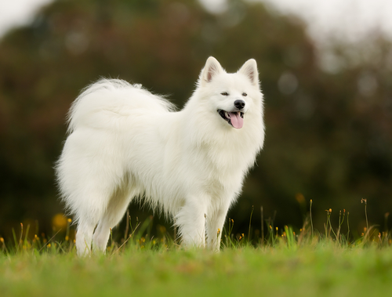

| דף ראשי | גזעים | מחלות | רקעים ותמונות | סקר | צרו קשר |
|---|
| קוקר ספאנייל |
| סמוייד |
| שפיץ יפני |
| פומרניאן |
| פודל |
| דני ענק |
| דלמטי |
| רועה גרמני |
| רועה קווקזי |
| רועה בלגי |
| בולדוג אמריקאי |
| בולדוג צרפתי |
| בולדוג אנגלי |
| צ'או צ'או |
| שיצ'ו |
| אמסטף |
| פינצ'ר |
| רוטווילר |
| דוברמן |
| האסקי סיבירי |
סמוייד
מידע נוסף
בסיביר הרחוקה אשר נמצאת אי שם בצפון הקפוא, התיישבו בני אדם ולצורך פרנסתם בדיג ובצאן, השתמשו בני האדם בכלבי הסמוייד בגרירת המזחלות לאיזורי הדיג ובשמירה על עדרי האיילים. בלילה, כשהקור היה בשיאו, הכלבים ובני האדם שהו ביחד בבית וכך חיממו אחד את את השני.
סמויד - מקור הגזע והיסטוריה
הסמוייד נקרא על שם השבט שיושב באיזור סיביר אשר ברוסייה. הסמוייד שימש ככלב מזחלות וכרועה צאן בשעות היום. בלילות הקרים של סיביר שימש הכלב כחימום לבית. כך נוצר הקשר החם בין האדם לסמוייד. הסמוייד גדל, אוכל וישן עם בני האדם ובגלל קרבתו הרבה לבני האדם הסמוייד הוא גזע חביב ומומלץ לגידול לבית עם משפחה וילדים וגם לגיל הזהב. הסמוייד יכול להיות חבר טוב וייתן הרגשה שיש עוד מישהו בבית. הסמוייד הגיע לאירופה במאה ה-19 ע"י משלחות שהגיעו לאיזור סיביר ובגלל יופיו התפתח הגזע וכיום הסמוייד נפוץ בכל העולם. גם בישראל יש ביקוש לגזע.
סמויד - נתונים ומאפיינים
צבעו של הסמוייד נע בין לבן לקרם (תקן הגזע הוא לבן ).
פרוותם ארוכה ומלאה גוף שרירי וזנב פרוותי מסולסל. עיניים קטנות ואוזניים קטנות ומחודדות.
גובה: 53-57 ס"מ
משקל: 37-60 ק"ג
מחלות נפוצות וטיפול - כלב סמוייד
הסמוייד סובל מבעיות עיינים, בעיית אגן גנטית, והחזקה של סמוייד בבית חם יכולה לגרום לו לבעיות עור. הזנחת הכלב יכולה לגרום לסוכרת. בימים חמים יש לבדוק את הכלב שהוא לא מתייבש אפשר להכניס כמה קוביות קרח לקערית המים. תוחלת החיים בין 13-15 שנה.
